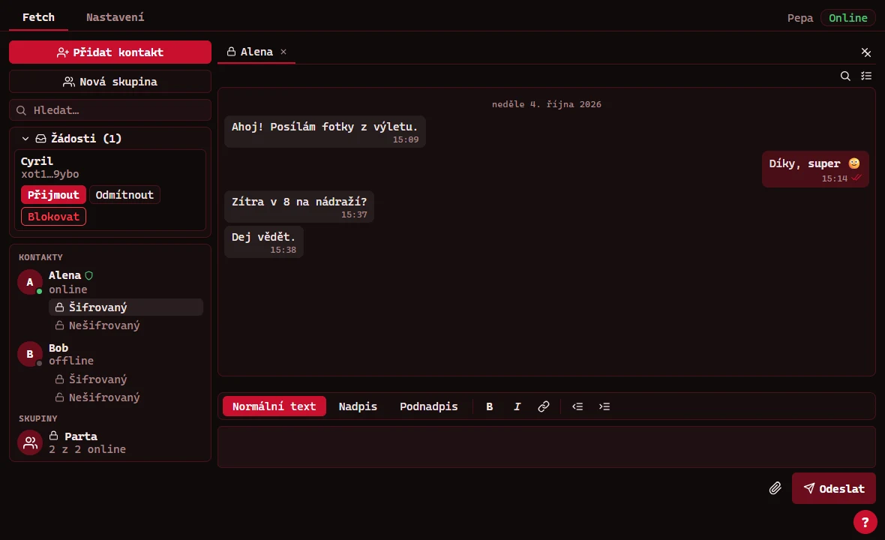
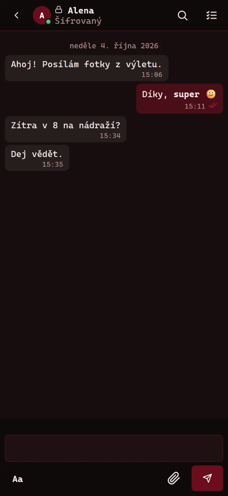
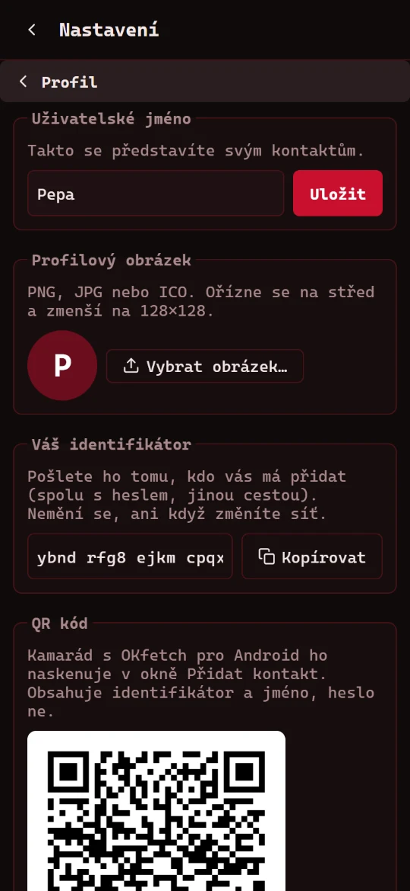
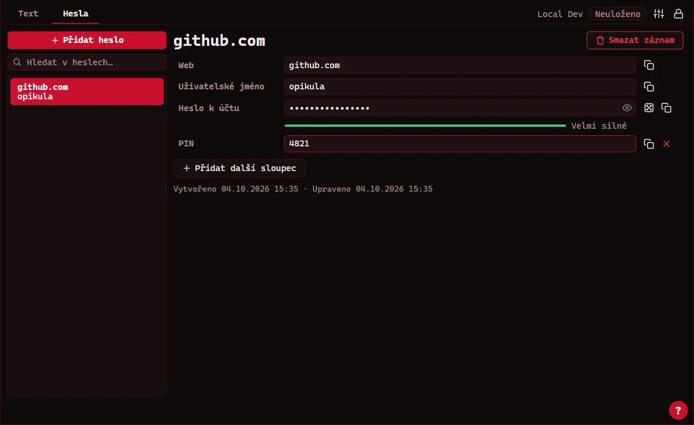
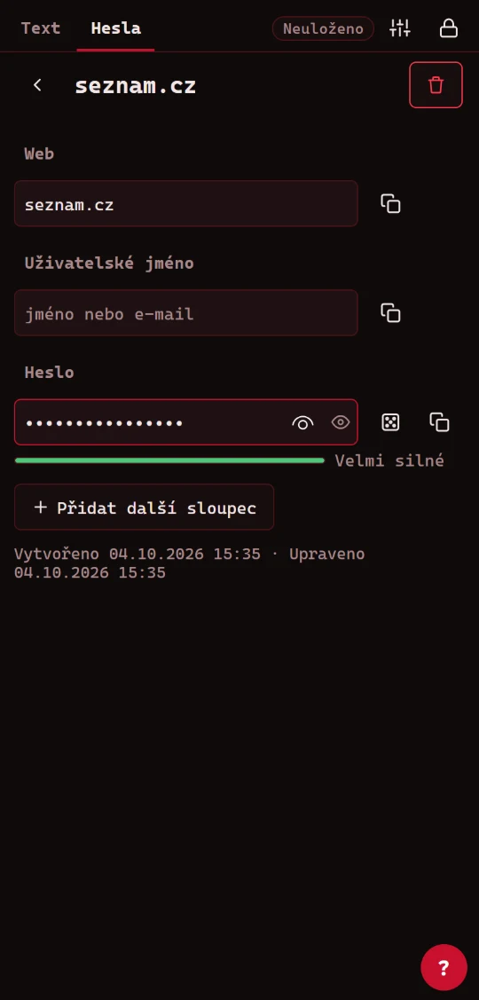

Chat bez serveru a trezor na hesla
Dvě aplikace pro Windows, Linux, macOS a Android. Zdarma, bez reklam a s otevřeným zdrojovým kódem. Vyberte aplikaci, zvolte PC nebo telefon a stáhněte si ji.
01 / chat bez serveru
OKfetch
Zprávy, soubory a skupiny posílané přímo mezi zařízeními. Nepotřebuje server ani účet, kontakt přidáte identifikátorem a heslem.
- Hyperswarm
- XChaCha20-Poly1305
- Ed25519 / X25519
- Nostr relay

Šifrovaný chat, čekající žádost o kontakt a skupina.


Chat a profil s QR kódem, který druhý telefon naskenuje.
Co umí
- Každý kontakt má dva chaty: šifrovaný a nešifrovaný. Šifrované zprávy jsou zašifrované i na disku.
- Posílání souborů s kontrolou celistvosti. Obrázky a GIF se ukážou přímo v chatu.
- Skupiny, zprávy pro offline kontakty, potvrzení doručení a přečtení.
- Funguje na Wi-Fi, ethernetu i mobilních datech. Když přímé spojení nejde, zprávy projdou šifrovaně přes veřejné relay servery.
- Ověřovací kód potvrdí, že mezi vámi a kontaktem nikdo není.
- Na telefonu: odemykání otiskem prstu, odpověď z notifikace, sdílení z jiných aplikací a záloha.
Co potřebujete
- Windows 10 nebo 11, Linux nebo macOS
- Node.js 20 nebo novější (verze LTS)
- Připojení k internetu, žádné porty se otevírat nemusí
Instalace
Stáhněte ZIP a rozbalte ho. Vznikne složka
OKfetch - WinLinMac.Nainstalujte Node.js. Stačí výchozí volby instalátoru.
Otevřete terminál ve složce
OKfetch - WinLinMaca nainstalujte závislosti:npm installSpusťte aplikaci:
npm run devChcete ji mít nainstalovanou jako běžný program? Sestavte si instalátor. Najdete ho pak ve složce
dist.npm run dist:winNa Linuxu
npm run dist:linux, na Macunpm run dist:mac.
Instalátor není podepsaný certifikátem vydavatele. Když Windows zobrazí upozornění, klikněte na Další informace a pak na Přesto spustit.
Aby se dva lidé spojili přes mobilní data, potřebují oba aktuální verzi.
Co potřebujete
- Telefon s Androidem 10 nebo novějším
- Povolenou instalaci aplikací z neznámých zdrojů
Instalace
Stáhněte
OKfetch.apkpřímo v telefonu, nebo ho do telefonu zkopírujte.Otevřete stažený soubor. Telefon se zeptá, jestli smí prohlížeč nebo správce souborů instalovat aplikace. Povolte to.
Když Play Protect varuje před neznámou aplikací, zvolte Další podrobnosti a Přesto nainstalovat.
Spusťte OKfetch a povolte notifikace, aby vám chodily zprávy.
Novou verzi nainstalujte přes starou, data zůstanou. Data jsou jen v telefonu, takže si v Nastavení dělejte zálohu.
02 / trezor na hesla a poznámky
OKpass
Šifrovaný správce hesel a poznámek. Trezor leží na vašem Google Disku a šifruje se na zařízení, ještě než se nahraje.
- Argon2id
- AES-256-GCM
- Google Disk

Záznam hesla s měřičem síly a vlastním polem.

Detail hesla na telefonu.
Co umí
- Textové dokumenty s nadpisy, tučným písmem, kurzívou a odsazením.
- Hesla s vlastními poli, generátorem a měřičem síly.
- Ukládá se samo na Google Disk. Bez internetu pracuje s lokální kopií a změny nahraje později.
- Klamný trezor: druhý klíč otevře jiný obsah. Špatný klíč ukáže věrohodná falešná data.
- Po nečinnosti se sám zamkne. Na telefonu odemknete otiskem prstu.
- Stejný trezor a stejný klíč na počítači i telefonu.
Co potřebujete
- Windows 10 nebo 11, Linux nebo macOS
- Node.js 20 nebo novější (verze LTS)
- Google účet a projekt v Google Cloud Console se zapnutým Google Drive API
Instalace
Stáhněte ZIP a rozbalte ho. Vznikne složka
OKpass - WinLinMac.Nainstalujte Node.js. Stačí výchozí volby instalátoru.
Otevřete terminál ve složce
OKpass - WinLinMaca nainstalujte závislosti:npm installSpusťte aplikaci:
npm run devPři prvním spuštění vyberte soubor
client_secret.jsonz Google Cloud Console. Jak ho získat, popisuje návod v README.Instalátor si sestavíte stejně jako u OKfetch. Najdete ho ve složce
dist.npm run dist:win
Aplikace vidí jen soubory, které sama vytvořila. Při přihlášení se může objevit hláška, že Google aplikaci neověřil. Pokračujte přes Continue.
Co potřebujete
- Telefon s Androidem 7.0 nebo novějším a službami Google Play
- Google účet, ve kterém už je trezor z počítače, nebo nový
Instalace
Stáhněte
OKpass.apkpřímo v telefonu, nebo ho do telefonu zkopírujte.Otevřete stažený soubor a povolte instalaci z tohoto zdroje.
Klepněte na Instalovat a aplikaci spusťte.
Přihlaste se Google účtem a zadejte klíč trezoru.
Telefon i počítač musí mít přihlášení ve stejném Google Cloud projektu, jinak telefon trezor z počítače neuvidí. Postup je v README OKpass.